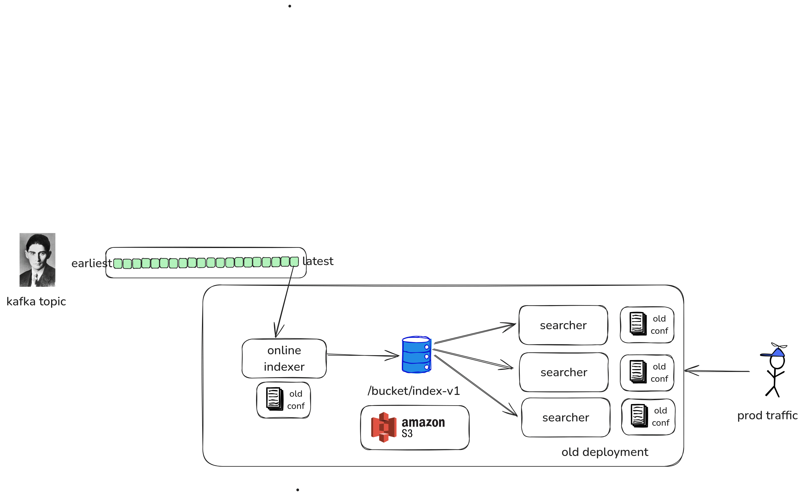

Nixiesearch: batteries included search engine¶


What is Nixiesearch?¶
Nixiesearch is a modern search engine that runs on S3-compatible storage. We built it after dealing with the headaches of running large Elastic/OpenSearch clusters (here's the blog post full of pain), and heres why its awesome:
- Powered by Apache Lucene: You get support for 39 languages, facets, advanced filters, autocomplete suggestions, and the familiar sorting features you're used to.
- Decoupled S3-based storage and compute: There's nothing to break. You get risk-free backups, upgrades, schema changes and auto-scaling, all on a stateless index stored in S3.
- Flexible deployment options: Run on Kubernetes, Docker, or serverless with AWS Lambda for scale-to-zero cost optimization.
- Pull indexing: Supports both offline and online incremental indexing using an Apache Spark based ETL process. No more POSTing JSON blobs to prod cluster (and overloading it).
- No state inside the cluster: All changes (settings, indexes, etc.) are just config updates, which makes blue-green deployments of index changes a breeze.
- AI batteries included: fully local Embedding and LLM inference, first class RAG API support.

Search is never easy, but Nixiesearch has your back. It takes care of the toughest partslike reindexing, capacity planning, and maintenanceso you can save time (and your sanity).
Note
Want to learn more? Go straight to the quickstart and check out the live demo.
What Nixiesearch is not?¶
- Nixiesearch is not a database, and was never meant to be. Nixiesearch is a search index for consumer-facing apps to find top-N most relevant documents for a query. For analytical cases consider using good old SQL with Clickhouse or Snowflake.
- Not a tool to search for logs. Log search is about throughput, and Nixiesearch is about relevance. If you plan to use Nixiesearch as a log storage system, please don't: consider ELK or Quickwit as better alternatives.
- Not meant for unstructured data. Your unstructured documents do have an implicit internal schema, and knowing it in advance makes all the indexing magic much more efficient. Elastic, Opensearch and SOLR are better choices in this case.
The difference¶
Our elasticsearch cluster has been a pain in the ass since day one with the main fix always "just double the size of the server" to the point where our ES cluster ended up costing more than our entire AWS bill pre-ES [HN source]
When your search cluster is red again when you accidentally send a wrong JSON to a wrong REST endpoint, you can just write your own S3-based search engine like big guys do:
- Uber: Lucene: Ubers Search Platform Version Upgrade.
- Amazon: E-Commerce search at scale on Apache Lucene.
- Doordash: Introducing DoorDashs in-house search engine.

Nixiesearch was inspired by these search engines, but is fully open-source (with no paid addons and enterprise tier). Decoupling search and storage makes ops simpler. Making your search configuration immutable makes it even more simple.

How it's different from popular search engines?
- vs Elastic: Embedding inference, hybrid search and reranking are free and open-source. For ES these are part of the proprietary cloud.
- vs OpenSearch: While OpenSearch can use S3-based segment replication, Nixiesearch can also offload cluster state to S3.
- vs Qdrant and Weaviate: Not a sidecar search engine to handle just vector search. Autocomplete, facets, RAG and embedding inference out of the box.
Try it out¶
Get the sample MSRD: Movie Search Ranking Dataset dataset:
curl -Lo movies.jsonl https://nixiesearch.ai/data/movies.jsonl
% Total % Received % Xferd Average Speed Time Time Time Current
Dload Upload Total Spent Left Speed
100 162 100 162 0 0 3636 0 --:--:-- --:--:-- --:--:-- 3681
100 32085 100 32085 0 0 226k 0 --:--:-- --:--:-- --:--:-- 226k
Create an index mapping for movies index in a file config.yml:
inference:
embedding:
e5-small: # (1)
model: intfloat/e5-small-v2 # (2)
schema:
movies: # index name
fields:
title: # field name
type: text
search:
lexical: # build lexical index
analyze: english
semantic: # and a vector search index also
model: e5-small
suggest: true
overview:
type: text
search: false
- We use ONNX Runtime for local embedding inference. But you can also use any API-based SaaS embedding provider.
- Any SBERT-compatible embedding model can be used, and you can bring your own
Run the Nixiesearch docker container:
docker run -itp 8080:8080 -v .:/data nixiesearch/nixiesearch:latest standalone -c /data/config.yml
If you see a cool ASCII-art logo, then the server is ready to serve requests:
- Local index movies opened
- opening index movies
-
-
-
-
-
-
- version=0.5.0 jdk[build]=21.0.6+7-LTS jdk[runtime]=21+35-2513 arch=arm64 build=CPU
- JVM args: -Xmx1g -verbose:gc --add-modules=jdk.incubator.vector
-
- Ember-Server service bound to address: [::]:8080
Let's submit the document corpus for indexing:
curl -XPOST -d @movies.jsonl http://localhost:8080/v1/index/movies
{"result":"created","took":8256}
And send a hybrid search request mixing a lexical match and semantic query with the RRF ranking:
curl -XPOST http://localhost:8080/v1/index/movies/search \
-H "Content-Type: application/json" \
-d '{
"query": {
"rrf": {
"retrieve": [
{"match": {"title": "batman"}},
{"semantic": {"title": "batman nolan"}}
],
"rank_window_size": 20
}
},
"fields": ["title"],
"size": 5
}'
And you get a response:
{
"took": 8,
"hits": [
{
"_id": "414906",
"title": "The Batman",
"_score": 0.033333335
},
{
"_id": "272",
"title": "Batman Begins",
"_score": 0.032786883
},
{
"_id": "209112",
"title": "Batman v Superman: Dawn of Justice",
"_score": 0.031257633
},
{
"_id": "324849",
"title": "The Lego Batman Movie",
"_score": 0.031054404
},
{
"_id": "155",
"title": "The Dark Knight",
"_score": 0.016129032
}
],
"aggs": {},
"ts": 1745590503193
}
Nixiesearch can do much more, like filtering, facets, autocomplete and RAG out of the box! For more details and more complex queries, see a complete Quickstart guide.
License¶
This project is released under the Apache 2.0 license, as specified in the License file.